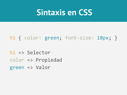

Sintaxis
La meta básica del lenguaje Cascading Stylesheet (CSS) es permitir al motor del navegador pintar elementos de la página con características específicas, como colores, posición o decoración. La sintaxis CSS refleja estas metas y estos son los bloques básicos de construcción La propiedad que es un identificador, un nombre leíble por humanos, que define qué característica es considerada. El valor que describe como las características deben ser manejadas por el motor. Cada propiedad tiene un conjunto de valores válidos, definido por una gramática formal, así como un significado semántico, implementados por el motor del navegador.
Declaraciones
Una propiedad y su valor son llamados una declaración, y cualquier motor de CSS calcula qué declaraciones aplican a cada uno de los elementos de una página para mostralos apropiadamente y estilizarlos. Ambos propiedades y valores son sensibles a mayúculas y minúsculas en CSS. El par se separa por dos puntos, ':' (U+003A COLON), y los espacios en blanco antes, entre ellos y después, pero no necesariamente dentro de ellos, son ignorados.
Bloques de declaración
Esos bloques son naturalmente llamados bloques de declaraciones y las declaraciones dentro de ellos están separadas por un punto y coma, ';' (U+003B SEMICOLON). Un bloque de declaración puede estar vacío, que es contener una declaración nula. Los espacios en blanco alrededor de las declaraciones son ignorados. En cuanto a la última declaración de un bloque, esta no necesita terminar en un punto y coma, aunque es usualmente considerado una buena práctica porque previene el olvidar agregarlo cuando se extienda el bloque con otra declaración.Sets de reglas
CSS permite esto asociando condiciones con bloques de declaraciones. Cada declaración (válida) es precedida por un selector, es decir, una condición que selecciona algunos elementos de la página. El bloque que forma el par selector-declaraciones recibe el nombre de set de reglas, o simplemente una regla. Debido a que un elemento de la página puede ser seleccionado por varios selectores, y, por lo tanto, por varias reglas que pueden contener la misma propiedad más de una vez, con diferentes valores, el estandar CSS define cuál regla tiene precedencia por sobre las otras y debe ser aplicada: esto se conoce como el algoritmo cascada.